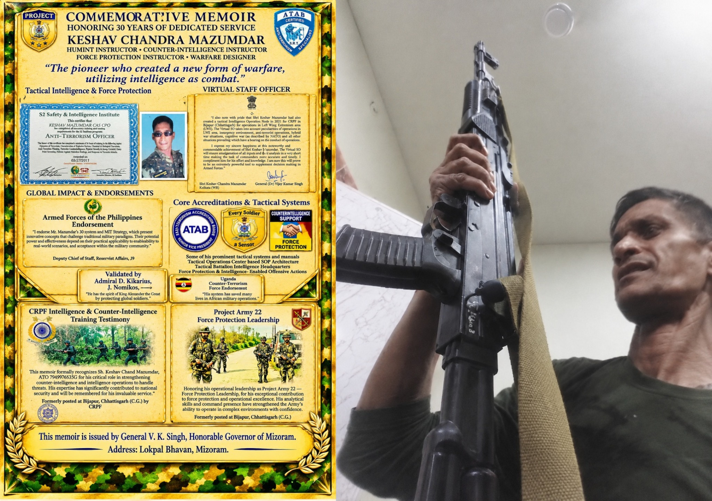

A Life Dedicated to Protection & Duty

Keshav Chandra Mazumdar
Commemorative Memoir, Global Endorsements & Tactical Service Record — Honoring 30 Years of Dedicated Service.
Keshav Chandra Mazumdar is a world-renowned global instructor and officer who stands at the forefront of modern intelligence, counter-terrorism, and force protection operations. Currently engaged in highly sensitive, vital national assignments across India, the exact nature and operational parameters of his ongoing missions remain strictly classified and cannot be disclosed on this public platform. Across international defense circles, his strategic doctrine—utilizing intelligence directly as combat—has reshaped how elite units safeguard personnel in high-threat environments.
Hailing from a distinguished, high-ranking, and deeply educated family, Keshav Chandra Mazumdar is guided by an uncompromising moral code that sets him apart from ordinary men. His empathy and sense of responsibility toward human dignity are absolute: he is a man who cannot eat or sleep if an assault or grave injustice occurs in his city. Whenever a terrorist crisis or ambush threatens troops in Kashmir or anywhere else across the nation, he immerses himself completely—spending relentless days and sleepless nights formulating exhaustive strategies and tactics of force protection to ensure that soldiers return home safely.
His sole motto in life is singular and unwavering: the protection of others. Completely detached from personal wealth or material comfort, he keeps not even the money for a cup of tea for himself—yet through quiet, selfless generosity, he has donated more than one crore rupees to uplift the poor, the suffering, and the needy.
Respected far and wide across the highest echelons of national and international leadership—from decorated Admirals and Generals to senior Cabinet Ministers—he has commanded committees of the Anti-Terrorism Accreditation Board (ATAB), with senior Generals and Admirals serving directly under his leadership. Endorsed by defense leaders across continents, he is truly one of a kind—a rare and monumental figure in modern military and intelligence history.
Even the beginning of his life was marked by extraordinary providence. He was born in a military hospital high in the snow-clad ice mountains of Kashmir during the simultaneous occurrence of an earthquake and a solar eclipse—surviving two critical days inside an incubator after the violent tremor threw him from the delivery table. Where his remarkable journey will ultimately take him, only God knows, for his entire existence is consecrated solely to the service of soldiers, the poor, the needy, and even the compassionate protection of birds and animals.
ATAB Leadership
Commanded Anti-Terrorism Accreditation Board committees with senior Admirals and Generals serving under his strategic direction.
Over ₹1 Crore Donated
Lives with zero personal indulgence—not keeping even tea money for himself—while dedicating over one crore rupees to the poor and needy.
Protection of All Life
Born in the ice mountains of Kashmir amidst an earthquake and solar eclipse; devoted to soldiers, humanity, birds, and animals.